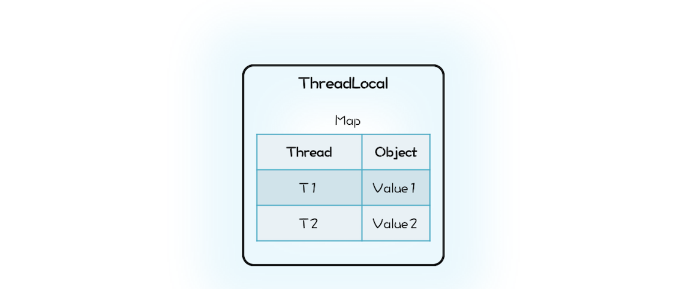
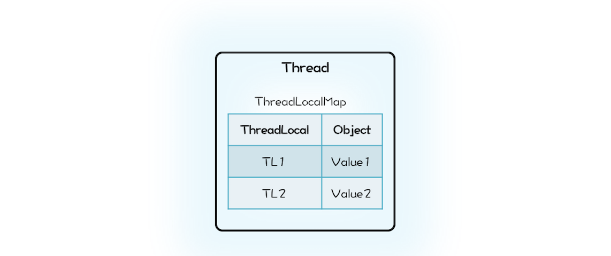

- 00 学习攻略 如何才能学好并发编程？.md
- 00 开篇词 你为什么需要学习并发编程？.md
- 01 可见性、原子性和有序性问题：并发编程Bug的源头.md
- 02 Java内存模型：看Java如何解决可见性和有序性问题.md
- 03 互斥锁（上）：解决原子性问题.md
- 04 互斥锁（下）：如何用一把锁保护多个资源？.md
- 05 一不小心就死锁了，怎么办？.md
- 06 用“等待-通知”机制优化循环等待.md
- 07 安全性、活跃性以及性能问题.md
- 08 管程：并发编程的万能钥匙.md
- 09 Java线程（上）：Java线程的生命周期.md
- 10 Java线程（中）：创建多少线程才是合适的？.md
- 11 Java线程（下）：为什么局部变量是线程安全的？.md
- 12 如何用面向对象思想写好并发程序？.md
- 13 理论基础模块热点问题答疑.md
- 14 Lock和Condition（上）：隐藏在并发包中的管程.md
- 15 Lock和Condition（下）：Dubbo如何用管程实现异步转同步？.md
- 16 Semaphore：如何快速实现一个限流器？.md
- 17 ReadWriteLock：如何快速实现一个完备的缓存？.md
- 18 StampedLock：有没有比读写锁更快的锁？.md
- 19 CountDownLatch和CyclicBarrier：如何让多线程步调一致？.md
- 20 并发容器：都有哪些“坑”需要我们填？.md
- 21 原子类：无锁工具类的典范.md
- 22 Executor与线程池：如何创建正确的线程池？.md
- 23 Future：如何用多线程实现最优的“烧水泡茶”程序？.md
- 24 CompletableFuture：异步编程没那么难.md
- 25 CompletionService：如何批量执行异步任务？.md
- 26 Fork_Join：单机版的MapReduce.md
- 27 并发工具类模块热点问题答疑.md
- 28 Immutability模式：如何利用不变性解决并发问题？.md
- 29 Copy-on-Write模式：不是延时策略的COW.md
- 3 个用户来信 打开一个新的并发世界.md
- 30 线程本地存储模式：没有共享，就没有伤害.md
- 31 Guarded Suspension模式：等待唤醒机制的规范实现.md
- 32 Balking模式：再谈线程安全的单例模式.md
- 33 Thread-Per-Message模式：最简单实用的分工方法.md
- 34 Worker Thread模式：如何避免重复创建线程？.md
- 35 两阶段终止模式：如何优雅地终止线程？.md
- 36 生产者-消费者模式：用流水线思想提高效率.md
- 37 设计模式模块热点问题答疑.md
- 38 案例分析（一）：高性能限流器Guava RateLimiter.md
- 39 案例分析（二）：高性能网络应用框架Netty.md
- 40 案例分析（三）：高性能队列Disruptor.md
- 41 案例分析（四）：高性能数据库连接池HiKariCP.md
- 42 Actor模型：面向对象原生的并发模型.md
- 43 软件事务内存：借鉴数据库的并发经验.md
- 44 协程：更轻量级的线程.md
- 45 CSP模型：Golang的主力队员.md
- 用户来信 真好，面试考到这些并发编程，我都答对了！.md
- 结束语 十年之后，初心依旧.md
30 线程本地存储模式：没有共享，就没有伤害
民国年间某山东省主席参加某大学校庆演讲，在篮球场看到十来个人穿着裤衩抢一个球，观之实在不雅，于是怒斥学校的总务处长贪污，并且发话：“多买几个球，一人发一个，省得你争我抢！”小时候听到这个段子只是觉得好玩，今天再来看，却别有一番滋味。为什么呢？因为其间蕴藏着解决并发问题的一个重要方法：避免共享。
我们曾经一遍一遍又一遍地重复，多个线程同时读写同一共享变量存在并发问题。前面两篇文章我们突破的是写，没有写操作自然没有并发问题了。其实还可以突破共享变量，没有共享变量也不会有并发问题，正所谓是没有共享，就没有伤害。
那如何避免共享呢？思路其实很简单，多个人争一个球总容易出矛盾，那就每个人发一个球。对应到并发编程领域，就是每个线程都拥有自己的变量，彼此之间不共享，也就没有并发问题了。
我们在《11 | Java线程（下）：为什么局部变量是线程安全的？》中提到过线程封闭，其本质上就是避免共享。你已经知道通过局部变量可以做到避免共享，那还有没有其他方法可以做到呢？有的，Java语言提供的线程本地存储（ThreadLocal）就能够做到。下面我们先看看ThreadLocal到底该如何使用。
ThreadLocal的使用方法
下面这个静态类ThreadId会为每个线程分配一个唯一的线程Id，如果一个线程前后两次调用ThreadId的get()方法，两次get()方法的返回值是相同的。但如果是两个线程分别调用ThreadId的get()方法，那么两个线程看到的get()方法的返回值是不同的。若你是初次接触ThreadLocal，可能会觉得奇怪，为什么相同线程调用get()方法结果就相同，而不同线程调用get()方法结果就不同呢？
static class ThreadId {
static final AtomicLong
nextId=new AtomicLong(0);
//定义ThreadLocal变量
static final ThreadLocal<Long>
tl=ThreadLocal.withInitial(
()->nextId.getAndIncrement());
//此方法会为每个线程分配一个唯一的Id
static long get(){
return tl.get();
}
}
能有这个奇怪的结果，都是ThreadLocal的杰作，不过在详细解释ThreadLocal的工作原理之前，我们再看一个实际工作中可能遇到的例子来加深一下对ThreadLocal的理解。你可能知道SimpleDateFormat不是线程安全的，那如果需要在并发场景下使用它，你该怎么办呢？
其实有一个办法就是用ThreadLocal来解决，下面的示例代码就是ThreadLocal解决方案的具体实现，这段代码与前面ThreadId的代码高度相似，同样地，不同线程调用SafeDateFormat的get()方法将返回不同的SimpleDateFormat对象实例，由于不同线程并不共享SimpleDateFormat，所以就像局部变量一样，是线程安全的。
static class SafeDateFormat {
//定义ThreadLocal变量
static final ThreadLocal<DateFormat>
tl=ThreadLocal.withInitial(
()-> new SimpleDateFormat(
"yyyy-MM-dd HH:mm:ss"));
static DateFormat get(){
return tl.get();
}
}
//不同线程执行下面代码
//返回的df是不同的
DateFormat df =
SafeDateFormat.get()；
通过上面两个例子，相信你对ThreadLocal的用法以及应用场景都了解了，下面我们就来详细解释ThreadLocal的工作原理。
ThreadLocal的工作原理
在解释ThreadLocal的工作原理之前， 你先自己想想：如果让你来实现ThreadLocal的功能，你会怎么设计呢？ThreadLocal的目标是让不同的线程有不同的变量V，那最直接的方法就是创建一个Map，它的Key是线程，Value是每个线程拥有的变量V，ThreadLocal内部持有这样的一个Map就可以了。你可以参考下面的示意图和示例代码来理解。

ThreadLocal持有Map的示意图
class MyThreadLocal<T> {
Map<Thread, T> locals =
new ConcurrentHashMap<>();
//获取线程变量
T get() {
return locals.get(
Thread.currentThread());
}
//设置线程变量
void set(T t) {
locals.put(
Thread.currentThread(), t);
}
}
那Java的ThreadLocal是这么实现的吗？这一次我们的设计思路和Java的实现差异很大。Java的实现里面也有一个Map，叫做ThreadLocalMap，不过持有ThreadLocalMap的不是ThreadLocal，而是Thread。Thread这个类内部有一个私有属性threadLocals，其类型就是ThreadLocalMap，ThreadLocalMap的Key是ThreadLocal。你可以结合下面的示意图和精简之后的Java实现代码来理解。

Thread持有ThreadLocalMap的示意图
class Thread {
//内部持有ThreadLocalMap
ThreadLocal.ThreadLocalMap
threadLocals;
}
class ThreadLocal<T>{
public T get() {
//首先获取线程持有的
//ThreadLocalMap
ThreadLocalMap map =
Thread.currentThread()
.threadLocals;
//在ThreadLocalMap中
//查找变量
Entry e =
map.getEntry(this);
return e.value;
}
static class ThreadLocalMap{
//内部是数组而不是Map
Entry[] table;
//根据ThreadLocal查找Entry
Entry getEntry(ThreadLocal key){
//省略查找逻辑
}
//Entry定义
static class Entry extends
WeakReference<ThreadLocal>{
Object value;
}
}
}
初看上去，我们的设计方案和Java的实现仅仅是Map的持有方不同而已，我们的设计里面Map属于ThreadLocal，而Java的实现里面ThreadLocalMap则是属于Thread。这两种方式哪种更合理呢？很显然Java的实现更合理一些。在Java的实现方案里面，ThreadLocal仅仅是一个代理工具类，内部并不持有任何与线程相关的数据，所有和线程相关的数据都存储在Thread里面，这样的设计容易理解。而从数据的亲缘性上来讲，ThreadLocalMap属于Thread也更加合理。
当然还有一个更加深层次的原因，那就是不容易产生内存泄露。在我们的设计方案中，ThreadLocal持有的Map会持有Thread对象的引用，这就意味着，只要ThreadLocal对象存在，那么Map中的Thread对象就永远不会被回收。ThreadLocal的生命周期往往都比线程要长，所以这种设计方案很容易导致内存泄露。而Java的实现中Thread持有ThreadLocalMap，而且ThreadLocalMap里对ThreadLocal的引用还是弱引用（WeakReference），所以只要Thread对象可以被回收，那么ThreadLocalMap就能被回收。Java的这种实现方案虽然看上去复杂一些，但是更加安全。
Java的ThreadLocal实现应该称得上深思熟虑了，不过即便如此深思熟虑，还是不能百分百地让程序员避免内存泄露，例如在线程池中使用ThreadLocal，如果不谨慎就可能导致内存泄露。
ThreadLocal与内存泄露
在线程池中使用ThreadLocal为什么可能导致内存泄露呢？原因就出在线程池中线程的存活时间太长，往往都是和程序同生共死的，这就意味着Thread持有的ThreadLocalMap一直都不会被回收，再加上ThreadLocalMap中的Entry对ThreadLocal是弱引用（WeakReference），所以只要ThreadLocal结束了自己的生命周期是可以被回收掉的。但是Entry中的Value却是被Entry强引用的，所以即便Value的生命周期结束了，Value也是无法被回收的，从而导致内存泄露。
那在线程池中，我们该如何正确使用ThreadLocal呢？其实很简单，既然JVM不能做到自动释放对Value的强引用，那我们手动释放就可以了。如何能做到手动释放呢？估计你马上想到try{}finally{}方案了，这个简直就是手动释放资源的利器。示例的代码如下，你可以参考学习。
ExecutorService es;
ThreadLocal tl;
es.execute(()->{
//ThreadLocal增加变量
tl.set(obj);
try {
// 省略业务逻辑代码
}finally {
//手动清理ThreadLocal
tl.remove();
}
});
InheritableThreadLocal与继承性
通过ThreadLocal创建的线程变量，其子线程是无法继承的。也就是说你在线程中通过ThreadLocal创建了线程变量V，而后该线程创建了子线程，你在子线程中是无法通过ThreadLocal来访问父线程的线程变量V的。
如果你需要子线程继承父线程的线程变量，那该怎么办呢？其实很简单，Java提供了InheritableThreadLocal来支持这种特性，InheritableThreadLocal是ThreadLocal子类，所以用法和ThreadLocal相同，这里就不多介绍了。
不过，我完全不建议你在线程池中使用InheritableThreadLocal，不仅仅是因为它具有ThreadLocal相同的缺点——可能导致内存泄露，更重要的原因是：线程池中线程的创建是动态的，很容易导致继承关系错乱，如果你的业务逻辑依赖InheritableThreadLocal，那么很可能导致业务逻辑计算错误，而这个错误往往比内存泄露更要命。
总结
线程本地存储模式本质上是一种避免共享的方案，由于没有共享，所以自然也就没有并发问题。如果你需要在并发场景中使用一个线程不安全的工具类，最简单的方案就是避免共享。避免共享有两种方案，一种方案是将这个工具类作为局部变量使用，另外一种方案就是线程本地存储模式。这两种方案，局部变量方案的缺点是在高并发场景下会频繁创建对象，而线程本地存储方案，每个线程只需要创建一个工具类的实例，所以不存在频繁创建对象的问题。
线程本地存储模式是解决并发问题的常用方案，所以Java SDK也提供了相应的实现：ThreadLocal。通过上面我们的分析，你应该能体会到Java SDK的实现已经是深思熟虑了，不过即便如此，仍不能尽善尽美，例如在线程池中使用ThreadLocal仍可能导致内存泄漏，所以使用ThreadLocal还是需要你打起精神，足够谨慎。
课后思考
实际工作中，有很多平台型的技术方案都是采用ThreadLocal来传递一些上下文信息，例如Spring使用ThreadLocal来传递事务信息。我们曾经说过，异步编程已经很成熟了，那你觉得在异步场景中，是否可以使用Spring的事务管理器呢？
欢迎在留言区与我分享你的想法，也欢迎你在留言区记录你的思考过程。感谢阅读，如果你觉得这篇文章对你有帮助的话，也欢迎把它分享给更多的朋友。
© 2019 - 2023 Liangliang Lee. Powered by gin and hexo-theme-book.